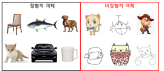
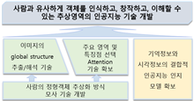
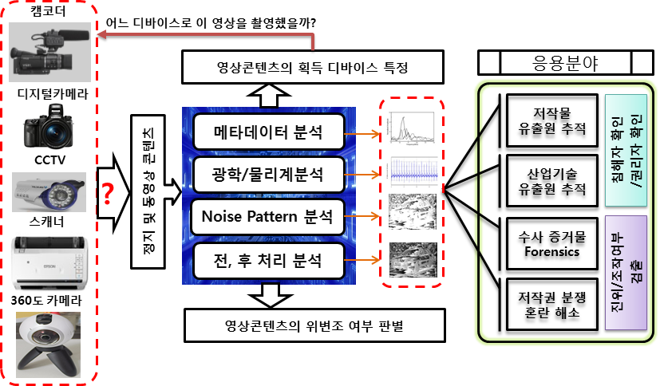
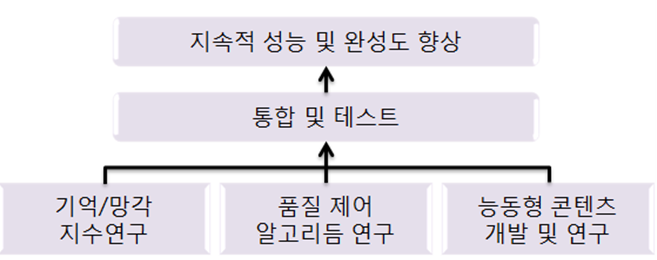

- Projects


기간 : (2022.03.01. ~ 2026.02.28.), 한국연구재단
비정형 객체의 인식, 생성, 이해를 통한 추상 영역의 인공지능 기술 개발 A Study on Abstractional Artificial Intelligence through the recognition, generation and understanding of atypical objects
(연구 목표) 예술 활동, 사물의 추상화를 통한 간편하고 인간적인 소통(communication) 및 노이즈가 있는 환경 등 비정형적인 일상에서의 인공지능 활용을 위해 사람과 유사하게 객체를 인식하고, 창작하고, 이해할 수 있는 추상영역의 인공지능 기술 개발
(연구 내용) - 확장성 있는 비정형 객체 인식을 위한 다중 도메인 인식용 심층신경망 개발
- 경험 DB와 심층신경망의 인지기능 결합을 위한 DB-NN 앙상블 모델 개발
- 체계적 비정형 객체 인식 연구를 위한 데이터셋 수집 및 구축
- 응용 연구 (비정형객체 생성, 잡음 필터링 없는 인식 모델)

기간 : (2018.03.01. ~ 2022.02.28.), 한국연구재단
영상 획득 장치 특정을 위한 다중 메트릭 디지털 영상 포렌식 기술 개발 Multi-metric digital image forensic technology for image source identification
(연구 목표) 주어진 디지털 형태의 정지 및 동영상 콘텐츠의 특징을 분석하여, 영상 콘텐츠가 최초 생성된 영상 획득 장치를 특정하고, 영상의 조작 여부를 판별할 수 있는 기능을 가진 다중 메트릭 디지털 영상 포렌식 기술 개발
(연구 내용) - 영상 데이터 세트 구축
- 영상 포렌식용 인공지능망 개발
- 다중 메트릭 장치식별 알고리즘 개발
- 포렌식 응용 기술 개발

기간 : (2015.07.01. ~ 2018.06.30.), 한국연구재단
사람의 기억 및 망각 구조에 기반한 능동형 디지털 영상 콘텐츠 저장 및 재생 기술 연구 Development of active digital image content store and play technologies inclusive of self oblivion functionality and content author’s intention
(연구 목표) 영상 콘텐츠에 대한 타인 배포 및 조작 허용 여부와 같은 저작자의 의도를 인간의 기억 및 망각 메커니즘을 기반으로 콘텐츠 자체 저장 및 재생 가능한 프레임워크를 개발하여 디지털 정보사회에서의 부작용을 완화
(연구 내용) - JPEG 및 H.264 콘텐츠 가역 정보은닉 및 품질제어 알고리즘 연구
- 배포 후 은닉정보의 재생, 복제, 소멸하는 기능 제어 메커니즘 연구
- 은닉정보에 최적화된 능동형 콘텐츠 저장을 위한 파일포맷 및 저작도구 개발
- 능동형 콘텐츠의 기능 해제, 불법적 콘텐츠 추출 공격에 대한 보안성 유지기술 개발